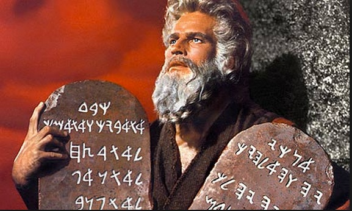

7.2 Uma breve história da tecnologia educacional


Imagem: Allstar/Cinetext/Paramount

Os debates sobre o papel da tecnologia na educação remontam a pelo menos 2.500 anos. Para compreender melhor o papel e a influência da tecnologia no ensino, necessitamos de recorrer um pouco à história, pois, como sempre, existem lições a extrair do passado. A obra de Paul Saettler, "The Evolution of American Educational Technology" (1990), constitui um dos relatos históricos mais abrangentes, mas estende-se apenas até 1989. Muito aconteceu desde então. O que apresento aqui corresponde a uma síntese bastante resumida da história da tecnologia educacional, e com uma perspectiva pessoal.
7.2.1 Comunicação oral
Um dos meios mais antigos de ensino formal foi a via oral — através da fala humana —, embora, ao longo do tempo, a tecnologia tenha sido cada vez mais utilizada para facilitar ou apoiar a comunicação oral. Na Antiguidade, as histórias, o folclore, as narrativas históricas e as notícias eram transmitidos e preservados através da comunicação oral, tornando a memorização precisa uma competência crítica, e a tradição oral continua a ser a realidade em muitas culturas indígenas. Para os antigos gregos, a oratória e o discurso constituíam os meios através dos quais as pessoas aprendiam e transmitiam o aprendizado. A Ilíada e a Odisseia de Homero eram poemas recitativos, destinados à apresentação pública. Para serem aprendidos, tinham de ser memorizados por meio da escuta, e não da leitura, e transmitidos por meio da recitação, e não da escrita. As aulas expositivas (lectures) remontam, pelo menos, aos antigos gregos. Demóstenes (384-322 a.C.) foi um orador notável cujos discursos influenciaram a política de Atenas.
No entanto, no século V a.C., já existiam documentos escritos em número considerável na Grécia Antiga. Se acreditarmos em Platão, a educação tem estado em uma espiral de declínio desde então. Segundo Platão, Sócrates surpreendeu um dos seus estudantes (Fedro) fingindo recitar um discurso de memória que, de fato, tinha aprendido a partir de uma versão escrita. Sócrates contou então a Fedro a história de como o deus Theuth ofereceu ao rei do Egito o dom da escrita, que seria uma "receita para a memória e para a sabedoria". O rei não se mostrou impressionado. Segundo o rei:
... ela [a escrita] introduzirá o esquecimento nas suas almas; deixarão de exercitar a memória porque passarão a confiar no que está escrito, criando a memória não a partir de si próprios, mas por meio de símbolos externos. O que descobriste não é uma receita para a memória, mas para a recordação. E não é a verdadeira sabedoria que ofereces aos teus discípulos, mas apenas a sua aparência, pois ao dizer-lhes muitas coisas sem lhes ensinar nada, farás com que pareçam saber muito, quando na maioria dos casos não saberão nada. E, como homens cheios não de sabedoria, mas da presunção da sabedoria, serão um fardo para os seus semelhantes.
Fedro, 274c-275, tradução adaptada de Manguel, 1996
Parece que ouço alguns dos meus antigos colegas dizendo exatamente o mesmo sobre as mídias sociais.
As lousas de pedra (slate boards) eram utilizadas na Índia no século XII d.C., e os quadros-negros começaram a ser utilizados nas escolas por volta da virada do século XVIII. No final da Segunda Guerra Mundial, o Exército dos EUA começou a utilizar retroprojetores para treinamento, e a sua utilização tornou-se comum para aulas expositivas, até serem amplamente substituídos por projetores eletrônicos e softwares de apresentação, como o PowerPoint, por volta de 1990. Convém notar aqui que a maioria das tecnologias utilizadas na educação não foi desenvolvida especificamente para o ensino, mas para outros fins (prioritariamente militares ou comerciais).
Embora o telefone date do final da década de 1870, o sistema telefônico padrão nunca se transformou em uma ferramenta educacional relevante, nem mesmo na educação a distância, devido ao custo elevado das chamadas telefônicas analógicas para múltiplos utilizadores, embora a audioconferência tenha sido utilizada para complementar outras mídias desde a década de 1970. A videoconferência, com a utilização de sistemas de cabos dedicados e salas de conferência dedicadas, é utilizada desde a década de 1980. O desenvolvimento da tecnologia de compressão de vídeo e de servidores de vídeo de custo relativamente baixo no início dos anos 2000 levou à introdução de sistemas de captura de aulas expositivas para gravação e transmissão de aulas presenciais em 2008. Os webinários são agora amplamente utilizados para ministrar aulas através da internet.
Nenhuma destas tecnologias, contudo, altera a base oral de comunicação do ensino.
7.2.2 Comunicação escrita
O papel do texto ou da escrita na educação conta também com uma longa história. Segundo a Bíblia, Moisés utilizou a pedra esculpida para transmitir os Dez Mandamentos sob a forma de escrita, provavelmente por volta do século VII a.C. Embora se diga que Sócrates se insurgiu contra a utilização da escrita, as formas escritas de comunicação tornam as cadeias analíticas e longas de raciocínio e argumentação muito mais acessíveis, reproduzíveis sem distorções e, portanto, mais abertas à análise e à crítica do que a natureza efêmera da fala.
A invenção da imprensa na Europa no século XV constituiu uma tecnologia verdadeiramente disruptiva, tornando o conhecimento escrito muito mais livremente disponível, de forma muito semelhante ao que a internet faz hoje. Em resultado da explosão de documentos escritos decorrente da mecanização da impressão, exigiu-se que muito mais pessoas no governo e nos negócios se tornassem alfabetizadas e analíticas, o que conduziu a uma rápida expansão da educação formal na Europa. Existiram muitas razões para o desenvolvimento do Renascimento e do Iluminismo, e para o triunfo da razão e da ciência sobre a superstição e as crenças na Europa, mas a tecnologia da imprensa constituiu um agente fundamental de mudança.
As melhorias nas infraestruturas de transporte no século XIX e, em particular, a criação de um sistema postal barato e confiável na década de 1840, conduziram ao desenvolvimento do primeiro ensino formal por correspondência, com a Universidade de Londres oferecendo um programa de graduação externa por correspondência a partir de 1858. Este primeiro programa formal de graduação a distância ainda hoje existe sob a forma da University of London Worldwide. Na década de 1970, a Open University transformou a utilização da impressão para o ensino através de unidades didáticas impressas especialmente planejadas e altamente ilustradas, que integravam atividades de aprendizagem com a mídia impressa, com base em design instrucional avançado.
Com o desenvolvimento dos sistemas de gestão de aprendizagem baseados na web em meados da década de 1990, a comunicação textual, embora digitalizada, transformou-se, pelo menos por um curto período, na principal mídia de comunicação para a aprendizagem baseada na internet, embora a captura de aulas e a transmissão de vídeo (video streaming) estejam agora alterando essa realidade.
7.2.3 Radiodifusão e vídeo

Imagem: © Copyright Oxyman e licenciado para reutilização sob uma licença Creative Commons

A British Broadcasting Corporation (BBC) começou a transmitir programas de rádio educativos para as escolas na década de 1920. A primeira transmissão de rádio da BBC destinada à educação de adultos, em 1924, consistiu numa palestra sobre Insects in Relation to Man (Os Insetos em Relação ao Homem) e, no mesmo ano, J.C. Stobart, o novo Diretor de Educação da BBC, idealizou uma "universidade de radiodifusão" na revista Radio Times (Robinson, 1982). A televisão foi utilizada pela primeira vez na educação na década de 1960, tanto para as escolas como para a educação geral de adultos (um dos seis objetivos da atual Carta Régia da BBC continua a ser "promover a educação e a aprendizagem").
Em 1969, o governo britânico criou a Open University (OU), que trabalhou em parceria com a BBC para desenvolver programas universitários abertos a todos, recorrendo originalmente a uma combinação de materiais impressos especialmente planejados pela equipe da OU e a programas de televisão e rádio produzidos pela BBC, mas integrados nas disciplinas. Embora os programas de rádio envolvessem prioritariamente a comunicação oral, os programas de televisão não utilizavam aulas expositivas tradicionais, mas focavam em formatos comuns da televisão geral, tais como documentários, demonstração de processos e estudos de caso (ver Bates, 1984). Em outras palavras, a BBC focou nas "affordances" (possibilidades) únicas da televisão, tema que será discutido detalhadamente mais adiante. Ao longo do tempo, com a introdução de novas tecnologias como as fitas de áudio e de vídeo (K7 e VHS), as transmissões ao vivo, especialmente de rádio, foram reduzidas nos programas da OU, embora continuem a existir canais educativos gerais transmitindo em todo o mundo (por exemplo, a TVOntario no Canadá; a PBS, o History Channel e o Discovery Channel nos EUA).
A utilização da televisão na educação espalhou-se rapidamente pelo mundo, sendo vista na década de 1970 por alguns, em particular em agências internacionais como o Banco Mundial e a UNESCO, como a salvação para a educação nos países em desenvolvimento. Contudo, estas expectativas desapareceram rapidamente perante a realidade da falta de energia elétrica, custos, segurança dos equipamentos públicos, clima, resistência dos professores locais e questões linguísticas e culturais locais (ver, por exemplo, Jamison e Klees, 1973). As transmissões via satélite começaram a ficar disponíveis na década de 1980, e manifestaram-se expectativas semelhantes de transmitir "aulas expositivas das principais universidades do mundo para as massas famintas", mas estas esperanças também se desvaneceram rapidamente pelas mesmas razões. No entanto, a Índia, que tinha lançado o seu próprio satélite, o INSAT, em 1983, utilizou-o inicialmente para transmitir programas de televisão educativa de produção local por todo o país, em várias línguas indígenas, recorrendo a receptores e televisores de concepção indiana instalados em centros comunitários locais e escolas (Bates, 1984).
Na década de 1990, o custo de criação e distribuição de vídeo caiu drasticamente devido à compressão digital e ao acesso à internet de alta velocidade. Esta redução nos custos de gravação e distribuição de vídeo levou também ao desenvolvimento de sistemas de captura de aulas expositivas. A tecnologia permite aos estudantes visualizar ou rever as aulas em qualquer momento e lugar que disponha de ligação à internet. O Massachusetts Institute of Technology (MIT) começou a disponibilizar gratuitamente ao público as suas aulas gravadas através do projeto OpenCourseWare, em 2002. O YouTube começou em 2005 e foi adquirido pela Google em 2006. O YouTube é cada vez mais utilizado para pequenos clipes educativos que podem ser baixados e integrados em disciplinas on-line. A Khan Academy começou a utilizar o YouTube em 2006 para aulas expositivas gravadas em voz-off, utilizando um quadro digital para equações e ilustrações. Em 2007, a Apple Inc. criou o iTunesU, que se transformou em um portal onde vídeos e outros materiais digitais sobre o ensino universitário podiam ser recolhidos e baixados gratuitamente pelos usuários finais.
Até ao aparecimento da captura de aulas, os sistemas de gestão de aprendizagem integravam características básicas de design pedagógico, mas isso exigia que os professores adaptassem o seu ensino presencial ao ambiente do LMS. A captura de aulas, por outro lado, não exigia quaisquer alterações ao modelo padrão de aula expositiva e, de certa forma, regressava à comunicação essencialmente oral apoiada pelo PowerPoint ou mesmo pela escrita no quadro. Assim, a comunicação oral continua hoje tão forte como sempre na educação, mas foi incorporada ou acomodada pelas novas tecnologias.
7.2.4 Tecnologias digitais
7.2.4.1 Aprendizagem baseada no computador
Em essência, o desenvolvimento da aprendizagem programada visa informatizar o ensino, estruturando a informação, testando os conhecimentos dos alunos e fornecendo feedback imediato aos aprendizes, sem intervenção humana que não seja no design do hardware e do software e na seleção e inserção de conteúdos e perguntas de avaliação. B.F. Skinner começou a experimentar máquinas de ensinar que utilizavam a aprendizagem programada em 1954, com base na teoria do behaviorismo (ver o Capítulo 2, Seção 3). As máquinas de ensinar de Skinner constituíram uma das primeiras formas de aprendizagem baseada no computador. Registrou-se recentemente um renascimento das abordagens de aprendizagem programada em consequência dos MOOCs, dado que a avaliação baseada em máquinas se escala muito mais facilmente do que a avaliação realizada por humanos.
O PLATO foi um sistema generalizado de instrução assistida por computador, desenvolvido originalmente na Universidade de Illinois, e que, no final da década de 1970, integrava vários milhares de terminais em todo o mundo em quase uma dezena de computadores de grande porte (mainframes) interligados em rede. O PLATO revelou-se um sistema altamente bem-sucedido, durando quase 40 anos, e incorporou conceitos on-line fundamentais: fóruns, painéis de mensagens, testes on-line, e-mail, salas de chat, mensagens instantâneas, partilha de tela remota e jogos multijogador.
As tentativas de replicar o processo de ensino através da inteligência artificial (IA) começaram em meados da década de 1980, inicialmente com foco no ensino de aritmética. Apesar dos elevados investimentos de pesquisa em IA para o ensino ao longo dos últimos 30 anos, os resultados têm sido, de modo geral, decepcionantes. Tem-se revelado difícil para as máquinas lidarem com a extraordinária variedade de formas como os estudantes aprendem (ou não conseguem aprender). Os desenvolvimentos recentes nas ciências cognitivas e na neurociência estão sendo acompanhados de perto, mas, no momento em que este texto é escrito, a distância continua a ser grande entre a ciência básica e a análise ou previsão de comportamentos de aprendizagem específicos a partir da ciência.
Mais recentemente, assistimos ao desenvolvimento da aprendizagem adaptativa, que analisa as respostas dos estudantes e os direciona para a área de conteúdo mais adequada, em função do seu desempenho. A análise de aprendizagem (learning analytics), que recolhe dados sobre as atividades dos estudantes e os relaciona com outros dados, tais como o desempenho escolar, constitui um desenvolvimento associado. Estes desenvolvimentos serão discutidos mais detalhadamente na Seção 7.7.
7.2.4.2 Redes de computadores
A Arpanet, nos EUA, constituiu a primeira rede a utilizar o protocolo de internet em 1982. No final da década de 1970, Murray Turoff e Roxanne Hiltz, no New Jersey Institute of Technology, experimentavam a aprendizagem híbrida (blended learning), recorrendo à rede informática interna do NJIT. Combinavam o ensino presencial com fóruns de discussão on-line, designando esta prática de "comunicação mediada por computador" ou CMC (Hiltz e Turoff, 1978). Na Universidade de Guelph, no Canadá, desenvolveu-se na década de 1980 um sistema de software comercial chamado CoSy, que permitia fóruns de discussão em grupo on-line encadeados, um antecessor dos atuais fóruns integrados nos sistemas de gestão de aprendizagem. Em 1988, a Open University do Reino Unido ofereceu uma disciplina, DT200, que, além das mídias tradicionais da OU (textos impressos, programas de televisão e fitas de áudio), também incluía uma componente de discussão on-line com a utilização do CoSy. Como esta disciplina contava com 1.200 estudantes inscritos, constituiu um dos primeiros cursos on-line abertos e massivos. Observamos, assim, a divisão emergente entre a utilização de computadores para a aprendizagem automatizada ou programada e a utilização de redes de computadores para permitir a comunicação entre estudantes e professores.
A World Wide Web foi lançada formalmente em 1991. A World Wide Web é basicamente uma aplicação que funciona na internet e que permite aos "usuários finais" criarem e associarem documentos, vídeos ou outras mídias digitais, sem necessidade de transcrever tudo em código de programação informática. O primeiro navegador web, o Mosaic, ficou disponível em 1993. Antes da Web, eram necessários métodos longos e demorados para carregar textos e encontrar materiais na internet. Vários motores de busca na internet foram desenvolvidos desde 1993, emergindo o Google, criado em 1999, como um dos principais motores de busca.
7.2.4.3 Ambientes de aprendizagem on-line
Em 1995, a Web permitiu o desenvolvimento dos primeiros sistemas de gestão de aprendizagem (LMSs), como o WebCT (que mais tarde se transformaria no Blackboard). Os LMSs oferecem um ambiente de ensino on-line, onde os conteúdos podem ser carregados e organizados, disponibilizando também espaços para objetivos de aprendizagem, atividades dos estudantes, perguntas de trabalhos e fóruns de discussão. As primeiras disciplinas totalmente on-line (valendo créditos) começaram a surgir em 1995, algumas utilizando LMSs, outras apenas carregando textos em PDF ou slides. Os materiais consistiam essencialmente em texto e recursos gráficos. Os LMSs transformaram-se no principal meio através do qual o ensino on-line era oferecido até ao aparecimento dos sistemas de captura de aulas por volta de 2008.
Em 2008, George Siemens, Stephen Downes e Dave Cormier, no Canadá, utilizaram a tecnologia web para criar o primeiro Massive Open Online Course (MOOC) "conectivista", uma comunidade de prática que associava apresentações de webinários e/ou publicações de blogs de especialistas aos blogs e tweets dos participantes, contando com pouco mais de 2.000 inscrições. As disciplinas eram abertas a qualquer pessoa e não dispunham de avaliação formal. Em 2012, dois professores da Universidade de Stanford lançaram um MOOC baseado na captura de aulas sobre inteligência artificial, atraindo mais de 100.000 estudantes, e desde então os MOOCs expandiram-se rapidamente por todo o mundo.
7.2.5 Mídias sociais
As mídias sociais constituem, na verdade, uma subcategoria da tecnologia digital, mas o seu desenvolvimento merece uma seção própria na história da tecnologia educacional. As mídias sociais abrangem uma grande variedade de tecnologias diferentes, incluindo blogs, wikis, vídeos do YouTube, dispositivos móveis como telefones e tablets, Twitter, Skype e Facebook. Andreas Kaplan e Michael Haenlein (2010) definem as mídias sociais como
um grupo de aplicações baseadas na internet que... permitem a criação e a troca de conteúdos gerados pelos utilizadores, com base em interações entre pessoas nas quais estas criam, partilham ou trocam informações e ideias em comunidades e redes virtuais.
As mídias sociais encontram-se fortemente associadas aos jovens e aos millenials — em outras palavras, a muitos dos estudantes do ensino superior. No momento em que este texto é escrito, as mídias sociais começam apenas a ser integradas na educação formal, e o seu principal valor educativo tem residido na educação informal, como o fomento de comunidades de prática on-line, ou nas franjas do ensino presencial, como os "tweets" durante as aulas expositivas ou a avaliação dos professores. Argumentar-se-á, contudo, nos Capítulos 8, 9 e 10 que estas mídias apresentam um potencial muito maior para a aprendizagem.
7.2.6 Uma mudança de paradigma
Verifica-se que a educação tem adotado e adaptado a tecnologia ao longo de um longo período de tempo. Existem lições úteis a tirar dos desenvolvimentos passados na utilização da tecnologia na educação, em particular que muitas afirmações feitas a respeito de uma tecnologia emergente não tendem a ser verdadeiras nem novas. Além disso, uma nova tecnologia raramente substitui por completo uma tecnologia mais antiga. Normalmente, a tecnologia antiga permanece, funcionando em um nicho mais especializado, como o rádio, ou integrada como parte de um ambiente tecnológico mais rico, como o vídeo na internet.
No entanto, o que distingue a era digital de todas as eras anteriores constitui o ritmo acelerado do desenvolvimento tecnológico e a nossa imersão em atividades baseadas na tecnologia no nosso cotidiano. Assim, é justo descrever o impacto da internet na educação como uma mudança de paradigma, pelo menos em termos de tecnologia educacional. Encontramo-nos ainda no processo de absorver e aplicar as suas implicações. A seção seguinte procura delimitar mais detalhadamente o significado educativo das diferentes mídias e tecnologias.
Atividade 7.2 O que a história nos revela?
1. O que constitui uma tecnologia educacional? Como classificaria uma aula gravada do MIT que é acessada como um recurso educacional aberto? Quando é que uma tecnologia é educacional e não apenas uma tecnologia?
2. Uma versão inicial da internet (Arpanet) existia muito antes de 1990, mas a combinação dos protocolos de internet e o desenvolvimento do HTML e da World Wide Web constituíram claramente um ponto de virada tanto nas telecomunicações como na educação (pelo menos para mim). O que faz, então, da internet e da Web uma mudança de paradigma? Ou serão apenas uma evolução, um passo seguinte natural no desenvolvimento da tecnologia?
3. A escrita é uma tecnologia? A aula expositiva tradicional é uma tecnologia? Importa decidir isto?
4. Os mais atentos ou analíticos poderão estar fazendo perguntas sobre a categorização ou definição de algumas das tecnologias listadas acima (para além da questão de como lidar com as pessoas como meio de comunicação). Por exemplo, a comunicação mediada por computador (CMC) existia antes da internet (desde 1978, de fato), mas não constitui uma tecnologia de internet? (Hoje sim, mas na altura não). De que forma as mídias sociais diferem da CMC? Faz sentido distinguir tecnologias de televisão como a radiodifusão, o cabo, o satélite, os DVDs ou a videoconferência, e será isto ainda relevante? Se sim, o que as distingue e o que têm em comum sob uma perspectiva pedagógica?
Estas são algumas das questões que se tornarão mais claras nas seções seguintes.
Referências
Bates, A. (1984) Broadcasting in Education: An Evaluation London: Constables
Hiltz, R. and Turoff, M. (1978) The Network Nation: Human Communication via Computer Reading MA: Addison-Wesley
Jamison, D. and Klees, S. (1973) The Cost of Instructional Radio and Television for Developing Countries Stanford CA: Stanford University Institute for Communication Research
Kaplan, A. and Haenlein, M. (2010), Users of the world, unite! The challenges and opportunities of social media, Business Horizons, Vol. 53, No. 1, pp. 59-68
Manguel, A. (1996) A History of Reading London: Harper Collins
Robinson, J. (1982) Broadcasting Over the Air London: BBC (esgotado)
Saettler, P. (1990) The Evolution of American Educational Technology Englewood CO: Libraries Unlimited
Selwood, D. (2014) What does the Rosetta Stone tell us about the Bible? Did Moses read hieroglyphs? The Telegraph, 15 de julho